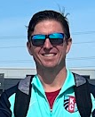

Coaching Staff
Our dedicated coaching staff brings experience, passion, and commitment to developing our players both on and off the field.
Brian Karpuk
Head Coach
With over 15 years of coaching experience, Coach Brian brings tactical knowledge and a player-centered approach to developing our team's skills and confidence.

Tim Sleddens
Assistant Coach
Coach Tim specializes in goalkeeper training and defensive organization, helping build the foundation for our team's success.
Paul Snider
Assistant Coach
Coach Paul focuses on team communication, sending timely reminders, and helping with substitutions during games to ensure smooth player development.
Our Coaching Philosophy
At Junior Current, our coaches believe in developing the whole player. We focus on:
- Building technical skills and tactical understanding
- Fostering teamwork and communication
- Developing leadership qualities and resilience
- Creating a positive, supportive environment where players can thrive
- Encouraging creativity and decision-making on the field